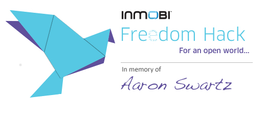

FEB
8-9
2013
Register Here!


"In spirit of making an open world, all the participants are encouraged to open source their hacks."
To remember Aaron's work and support the courage he showed, InMobi is organizing the Bangalore chapter of Aaron Swartz Memorial Hackthon happening worldwide. So, join us in the 24 hours Freedom Hack and set yourself free to code, innovate and learn. Your hack can fall into the domains such as Social , Mobile , Analytics & Cloud. This is not the restrictive list. So, we have the theme O'SMAC, meaning Others, Social, Mobile and Cloud. Prize will be given to each category winner. You can also leverage the public datasets available like http://data.gov.in/ In spirit of making an open world, all the participants are encouraged to open source their hacks. For more details scroll down.
I’m a teenage kid who’s interested in improving the world (mostly through law, politics, and technology). - Aaron Swartz
This was how Aaron described himself in 2004. Aaron Hillel Swartz (November 8, 1986 – January 11, 2013) was an American computer programmer, writer, political organizer and Internet activist. Swartz was involved in the development of the web feed format RSS,[5] the organization Creative Commons, the website framework web.py and the social news site, Reddit, in which he became a partner after its merger with his company, Infogami. Swartz's later work focused on sociology, civic awareness and activism. He helped launch the Progressive Change Campaign Committee in 2009 to learn more about effective online activism. In 2010 he became a research fellow at Harvard University's Safra Research Lab on Institutional Corruption, directed by Lawrence Lessig.He founded the online group Demand Progress, known for its campaign against theStop Online Piracy Act.